Unraveling the universe's greatest mysteries—from the cosmic symphony of gravitational waves to the precision timing of pulsars. Final year BS-MS student at IISER Bhopal, working at the frontier of observational cosmology.
Exploring the cosmos through gravitational waves and precision pulsar timing
Detecting ripples in spacetime from supermassive black hole binaries using pulsar timing arrays and understanding cosmic mergers.
Using millisecond pulsars as cosmic clocks to detect nanohertz gravitational waves and probe the gravitational wave background.
Precision cosmology through standard siren techniques, constraining Hubble constant and dark energy using gravitational wave sources.
Modeling heliospheric electron density variations and their impact on pulsar timing through dispersion measure corrections.
Contributions to peer-reviewed journals and preprints
Nature Communications
Read PaperMonthly Notices of the Royal Astronomical Society
Read PaperSubmitted to Journal of High Energy Astrophysics
arXivAcademic background, research experience, and achievements
Indian Institute of Science Education and Research (IISER) Bhopal
Current CPI: 8.26/10 • Madhya Pradesh, India
IISER Bhopal • Supervisor: Dr. Mayuresh Surnis
Using Interplanetary Scintillation for Dispersion Measure Corrections in PTA Datasets. Working with MWA and ORT archival data.
Max Planck Institute for Gravitational Physics, Hannover
Precision cosmology with PTAs. Targeted CGW searches using Galactic MSPs to constrain Hubble constant.
Indian Pulsar Timing Array
Solar Wind Gaussian Process modeling in pulsar noise for pulsars near ecliptic plane in InPTA DR2.
MPI Gravitational Physics, Hannover • Dr. Boris Goncharov
Ensemble Noise Properties of EPTA. Novel prior reweighting for hierarchical Bayesian inference. 2 papers published.
LMU Munich • Dr. Karan Molaverdikhani
EVLA data analysis for TRAPPIST-1 star-planet interaction radio signatures.
Total Citations: 25+ • 2 Published • 1 Submitted • ADS Library
Goncharov, B., Sardana, S., et al. (2025) • 2nd Author
Goncharov, B., & Sardana, S. (2025) • 2nd Author
Ojha, A., Sardana, S., & Ghosh, A. (2025) • 2nd Author
IPTA GWA Telecon • Oct 2024
EPTA-wide Telecon • Jul 2024
InPTA Telecon • Mar 2025
Current research initiatives and collaborations
Precision cosmology using PTAs to constrain cosmological parameters through targeted continuous gravitational wave searches using Galactic millisecond pulsars.
Using IPS technique to understand heliospheric electron density variations and DM variations in IPTA pulsar timing datasets.
Incorporated solar wind effects into pulsar noise modeling for pulsars near the ecliptic plane in InPTA DR2 dataset.
Tools, languages, and expertise I work with
Adventures beyond the observatory
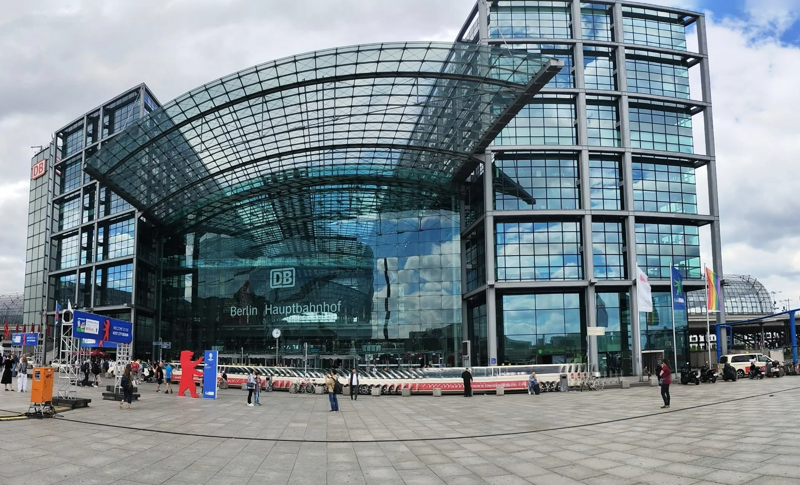
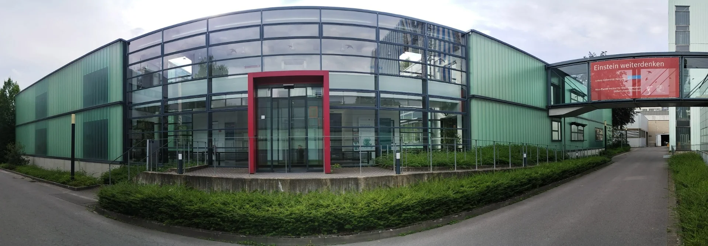
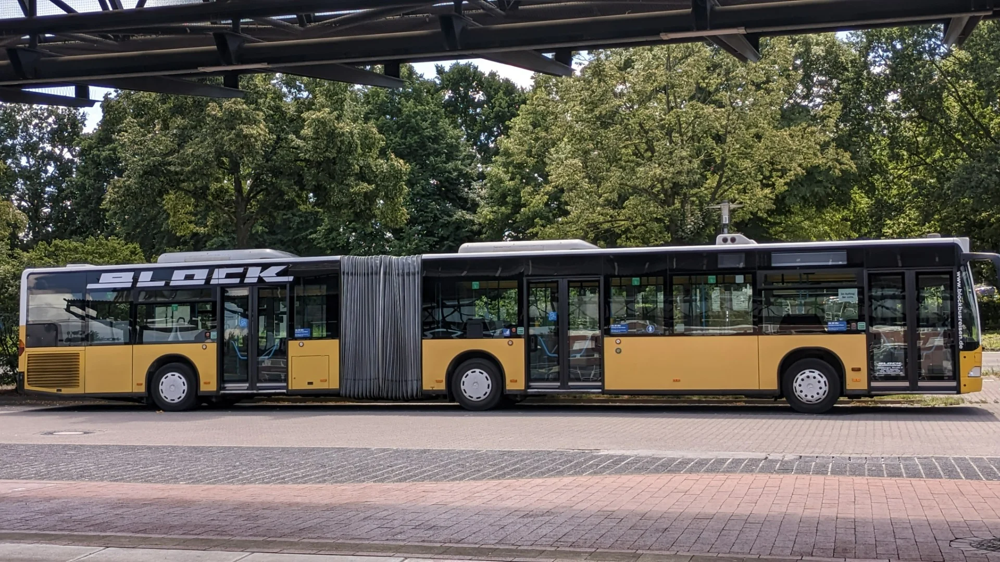
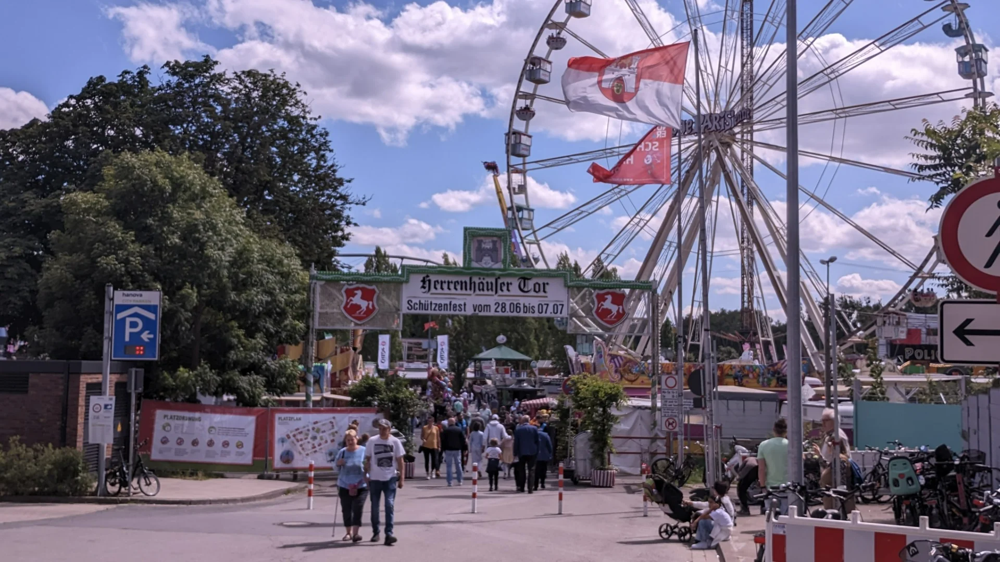
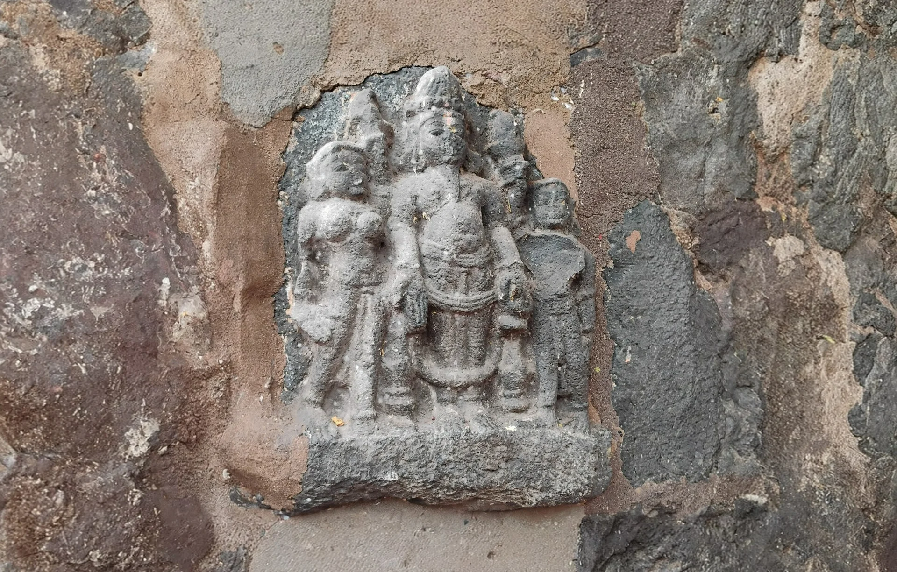
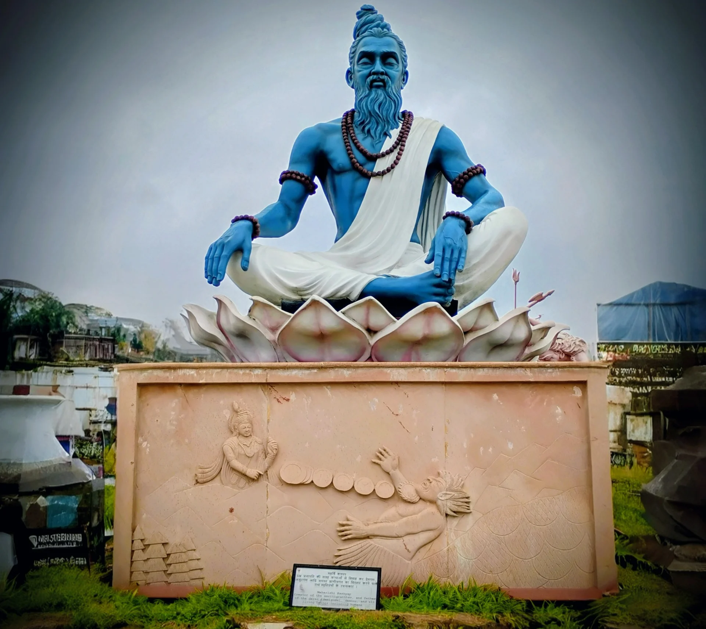
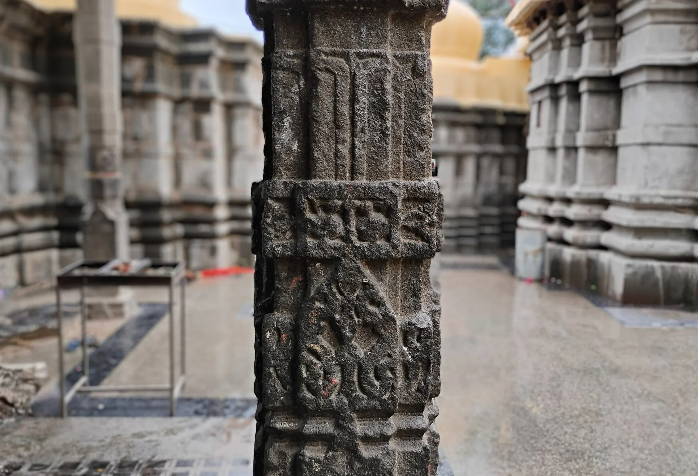
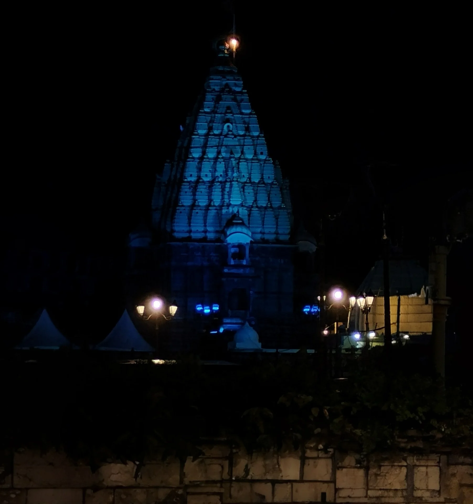
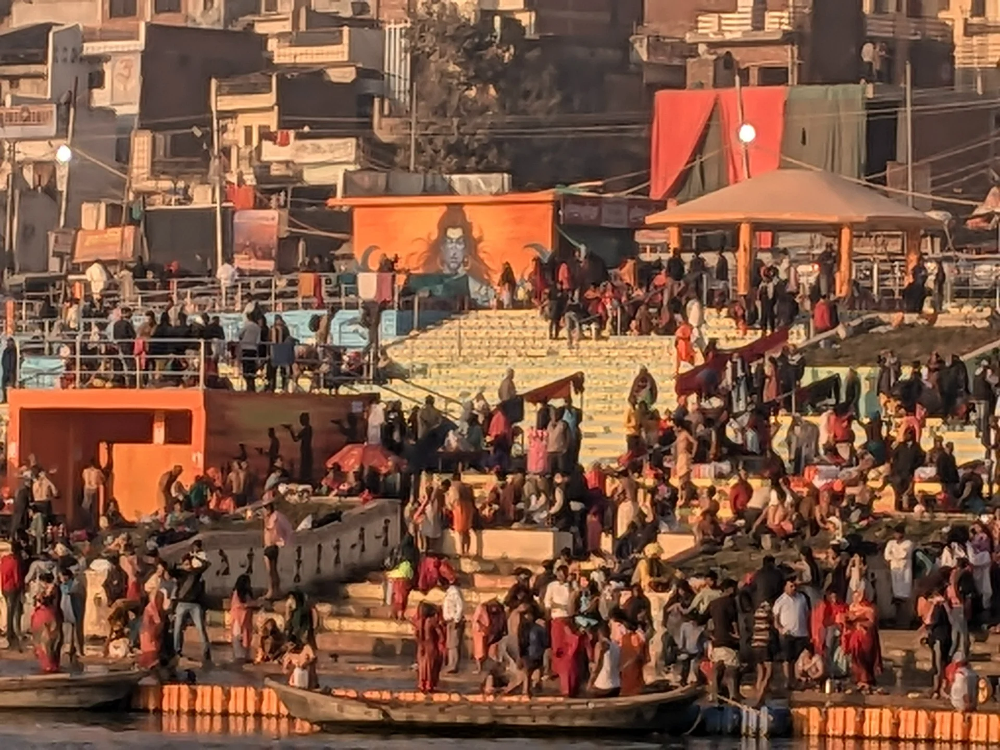
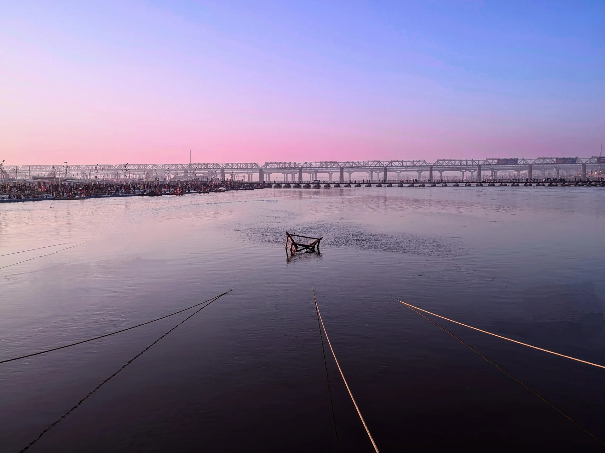
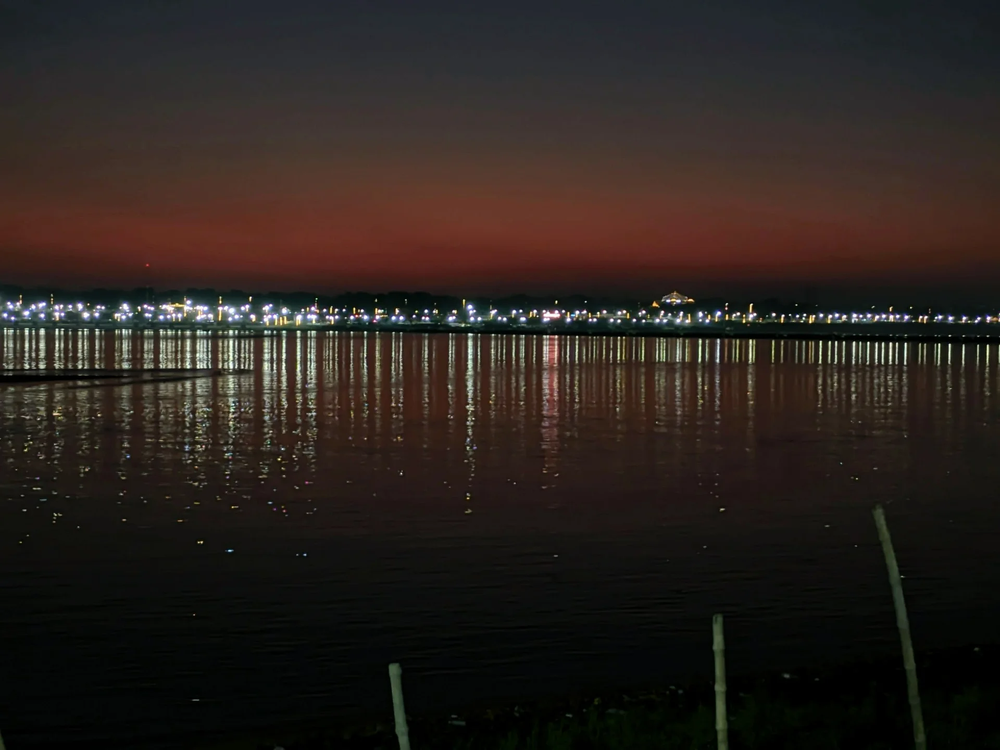
Have questions or want to collaborate? Reach out!